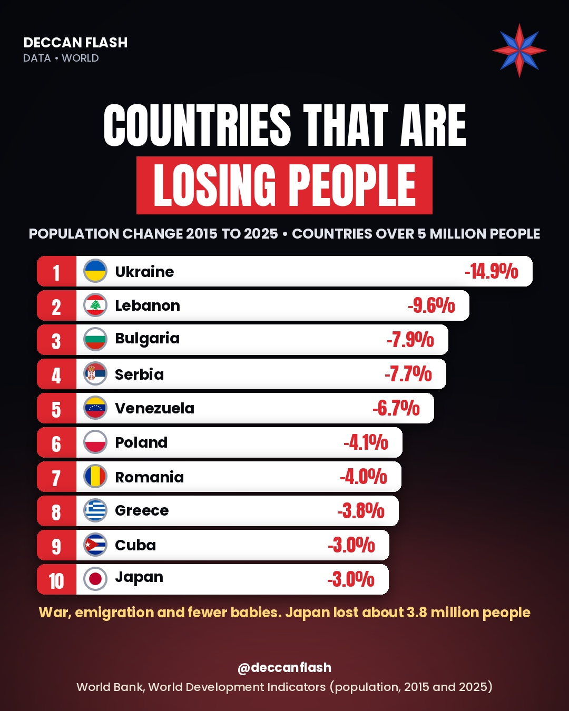

Population · World
The countries that are losing people
Ukraine fell from 45.8 million to 39.0 million people in ten years, the biggest drop of any country with over 5 million people. Most of the list is in eastern and southern Europe, where war, emigration and fewer babies are shrinking populations. Japan lost about 3.8 million people, more than any country except Ukraine.
Population change, 2015 to 2025
Countries with more than 5 million people in 2025. India and the world shown for comparison.
The ranking
| # | Country | 2015 (mn) | 2025 (mn) | Change |
|---|---|---|---|---|
| 1 | Ukraine | 45.8 | 39.0 | −14.9% |
| 2 | Lebanon | 6.5 | 5.8 | −9.6% |
| 3 | Bulgaria | 7.0 | 6.4 | −7.9% |
| 4 | Serbia | 7.1 | 6.5 | −7.7% |
| 5 | Venezuela | 30.6 | 28.5 | −6.7% |
| 6 | Poland | 38.0 | 36.4 | −4.1% |
| 7 | Romania | 19.8 | 19.0 | −4.0% |
| 8 | Belarus | 9.5 | 9.1 | −4.0% |
| 9 | Greece | 10.8 | 10.4 | −3.8% |
| 10 | Cuba | 11.3 | 10.9 | −3.0% |
| 11 | Japan | 127.1 | 123.4 | −3.0% |
| – | India | 1,328.0 | 1,463.9 | +10.2% |
| – | World | 7,441.1 | 8,215.4 | +10.4% |
Belarus (−4.0%) is 8th in the World Bank data but is not shown in our Instagram post. Hungary is next at −2.9%, then Italy at −2.2%. China grew 1.9% over the decade, though its population has been falling since 2022.

Quick answers
Which country's population is falling fastest?
Among countries with over 5 million people, Ukraine: −14.9% from 2015 to 2025 (45.8 million to 39.0 million), followed by Lebanon (−9.6%) and Bulgaria (−7.9%).
How many people has Japan lost?
About 3.8 million. Japan had 127.1 million people in 2015 and 123.4 million in 2025, a fall of 3.0%.
Is India's population falling?
No. India grew 10.2% from 2015 to 2025, from 1,328 million to 1,464 million, almost the same as the world's 10.4%.